Shift register
Data and valid traverse equal depth; iDelay-1 selects the historical transaction.
One delay contract is implemented as a shift register, circular queue, and memory-based DUT. The evidence includes original-ZIP ModelSim reruns, Icarus self-checks, and Quartus 24.3 synthesis, Fit, timing, and power reports.
Project 1 establishes data/valid alignment. Project 2 replaces whole-stage movement with one-slot writes. Project 3 adds repeatable file-driven stimulus and deterministic error reporting.

Data and valid traverse equal depth; iDelay-1 selects the historical transaction.
(write_ptr-iDelay) mod DEPTH and one-slot writes preserve the delay behavior.
Input Driver, DUT, and Output Checker compare data, valid, and final output count.
3 scenarios PASSFive pages across the three lecture PDFs were analyzed and reconciled with repository RTL and testbenches. These eight new diagrams are not source-slide captures; each is published as SVG with a PNG fallback.
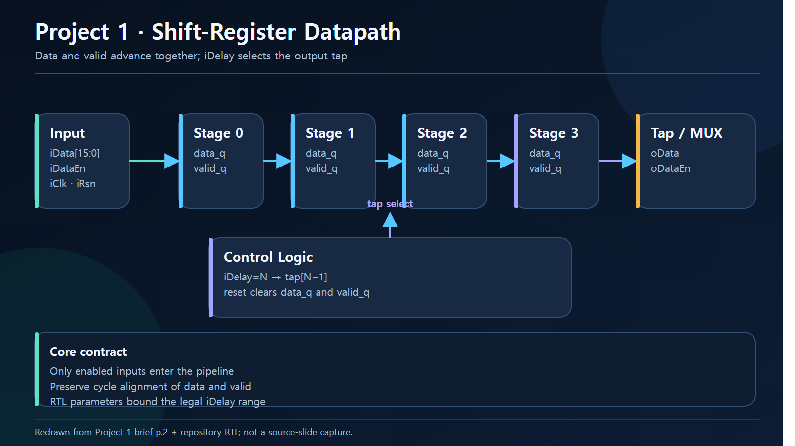
iDelay=N → tap[N-1]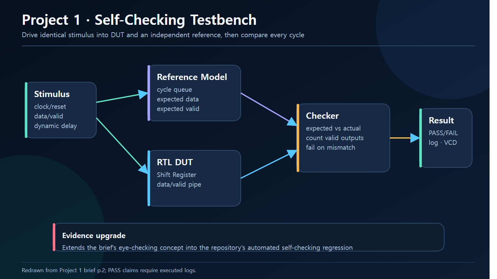
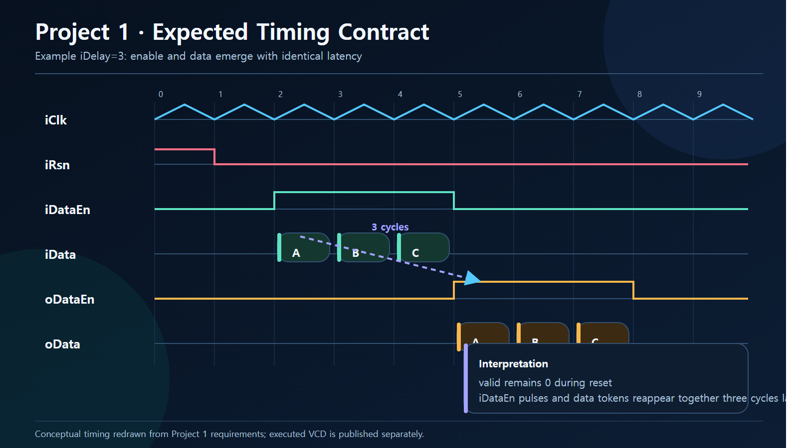
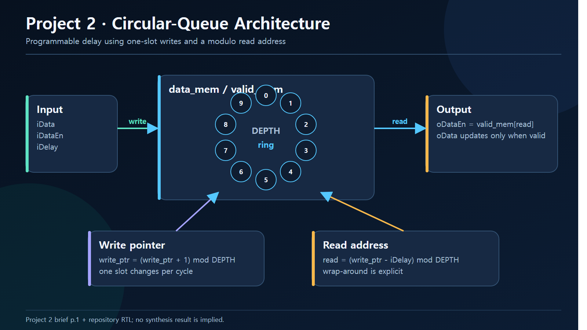
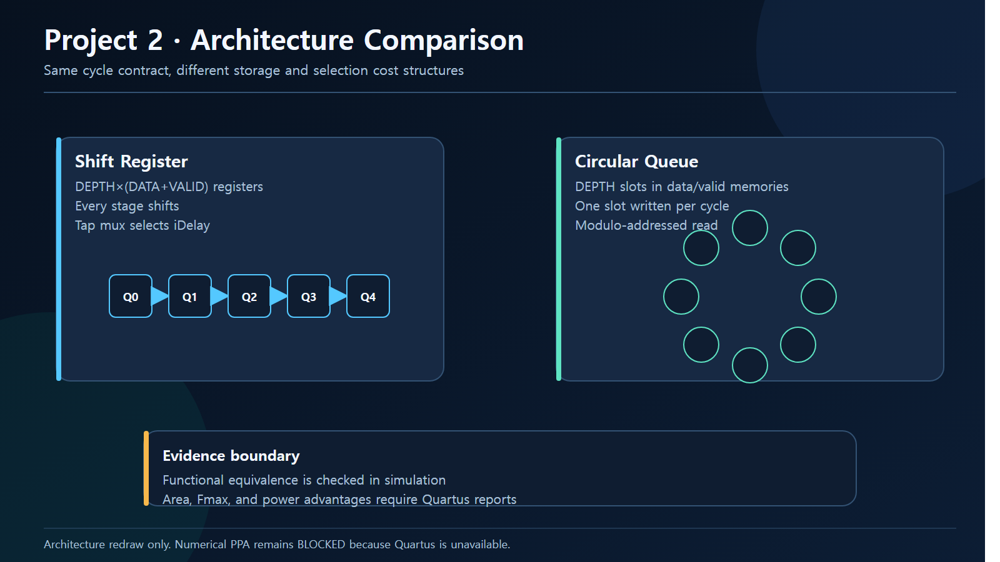
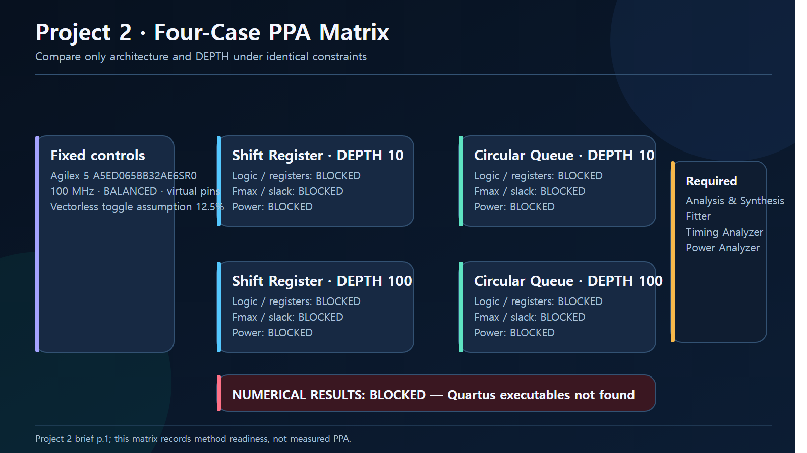
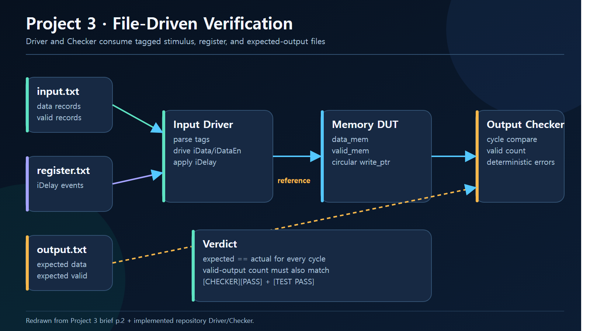
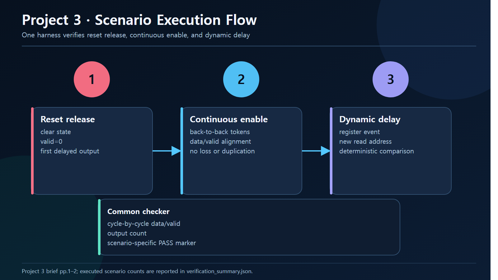
Every implementation treats data and valid as one transaction. Memory-coded designs leave the data array unreset and use valid state to prevent stale data from becoming observable.


These are not expected-waveform illustrations. They are rendered directly from VCD files generated by Icarus Verilog 13.0 while executing the RTL and testbenches.


The original Project 1/2 testbenches contain stimulus but no assertion or scoreboard. Their ModelSim runs are therefore compile-and-stimulus evidence, not functional PASS. Project 3 preserves both the untouched compile failure and the one-line compatibility-patched PASS.
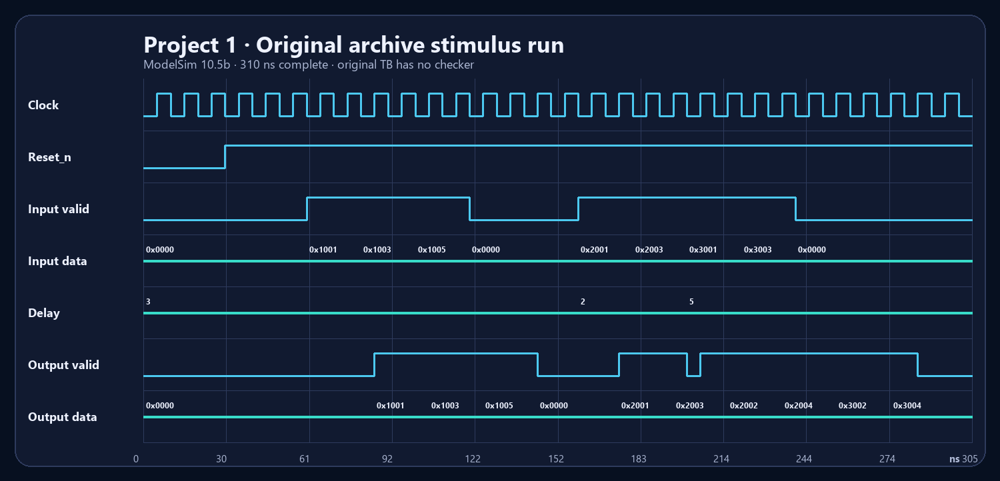
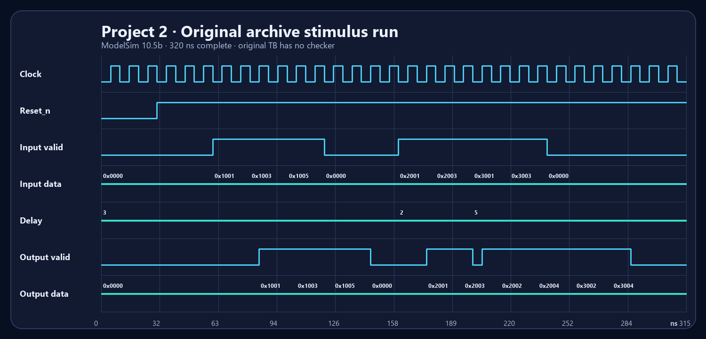
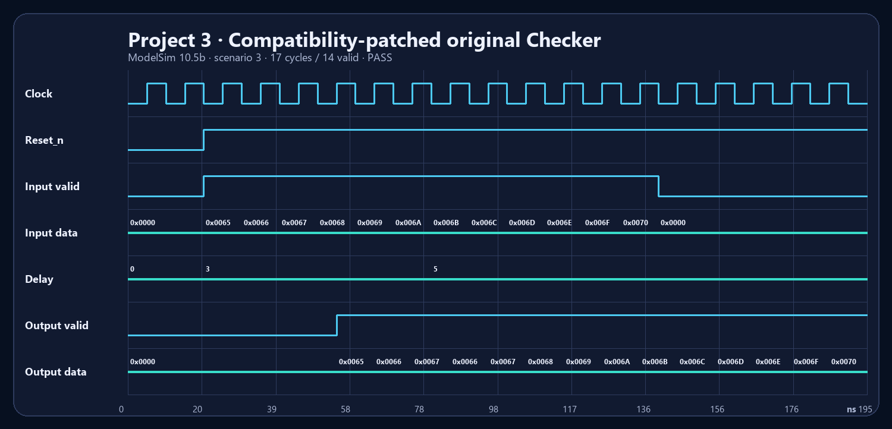
Original defect found. The Project 3 instance name checker conflicts with a SystemVerilog reserved keyword. Its supplied batch wrapper then masks the compile failure with exit code 0 and a “completed” message. Review hashes, failure log, and patch boundary.
PASS is used only for executions with a checker. Original stimulus-only testbenches, supplemental self-checks, and Quartus synthesis/Fit results remain distinct evidence layers.
| Project | RTL | Simulation | Synthesis | PPA |
|---|---|---|---|---|
| 1 · Shift Register | Reviewed | PASS 20 supplemental checks | SUCCESS Quartus 24.3.1 · 85 ALM estimate | N/A |
| 2 · Circular Queue | Reviewed | PASS 2 implementations + reference · 26 checks | SUCCESS Four Fits complete | COMPLETE Timing + Power raw reports |
| 3 · Memory DV | Reviewed | PASS Original Checker after one-line compatibility change | SUCCESSaltdpram inferred as LUTRAM | N/A |
Shift Register and Circular Queue at DEPTH 10/100 were synthesized and fitted for Agilex 5 at 100 MHz with BALANCED optimization, virtual pins, and one fixed 12.5% toggle assumption.
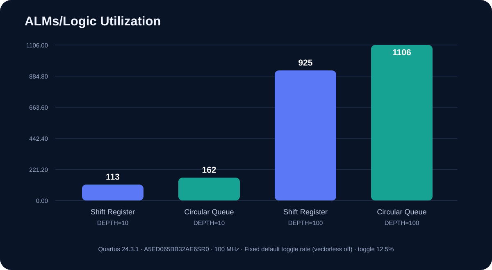
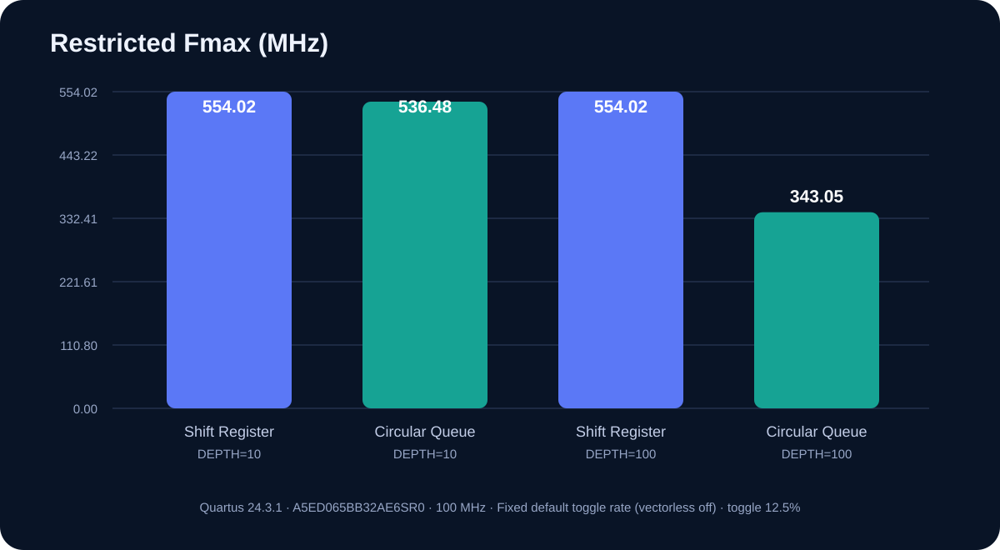
| Architecture | DEPTH | ALMs | Registers | Restricted Fmax | Setup slack | Dynamic power |
|---|---|---|---|---|---|---|
| Shift Register | 10 | 113 | 175 | 554.02 MHz | 9.098 ns | 0.737 W |
| Circular Queue | 10 | 162 | 178 | 536.48 MHz | 8.136 ns | 0.737 W |
| Shift Register | 100 | 925 | 1851 | 554.02 MHz | 8.800 ns | 0.742 W |
| Circular Queue | 100 | 1106 | 1714 | 343.05 MHz | 7.085 ns | 0.744 W |
Interpretation. At DEPTH 100 the Queue reduces registers by 7.4%, but increases ALMs by 19.6% and reduces restricted Fmax by 38.1%. Both Queue builds use zero RAM blocks, so this asynchronous indexed-read RTL does not gain RAM inference. Power has Low estimation confidence and is not a board measurement.
On Windows with PowerShell and Icarus Verilog 13.0, this command rebuilds the logs, VCD files, and JSON evidence manifest.
powershell -NoProfile -ExecutionPolicy Bypass -File .\scripts\run_all_verification.ps1